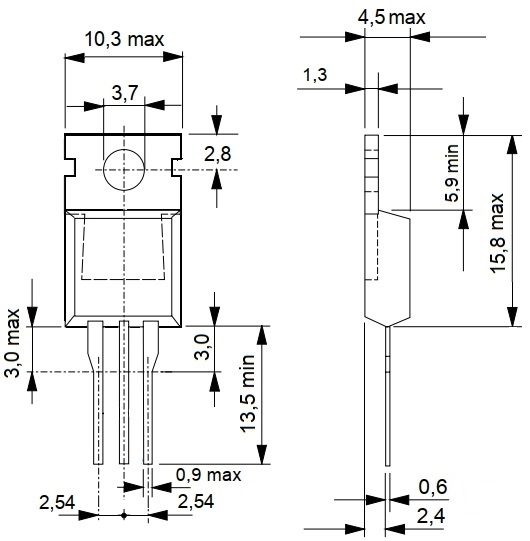

Тиристор BT151-500R
Тиристор BT151-500R предназначен для применения в качестве переключающих элементов устройств коммутации напряжения малыми управляющими сигналами.
Тип корпус: SOT-78 (TO-220AB).
Масса тиристора не более 2,0 г.

Рис. 2 - Габаритные размеры тиристора BT151-500R
Таблица 1
| Параметр | Значение |
|---|---|
| Максимальное обратное напряжение Uобр, В | 500 |
| Максимальное повторяющееся импульсное напряжение в закрытом состоянии Uзс повт max, В | 500 |
| Максимальное среднее за период значение тока в открытом состоянии Iос ср max, А | 7,5 |
| Максимальный кратковременный импульсный ток в открытом состоянии Iкр max, А | 100 |
| Максимальное напряжение в открытом состоянии Uос max, В | 1,75 |
| Наименьший постоянный ток управления, необходимый для включения тиристора Iу от min, А | 0,015 |
| Отпирающее напряжение управления,соответствующее минимальному постоянному отпирающему току Uу от, В | 1,5 |
| Критическая скорость нарастания напряжения в закрытом состоянии dUзс/dt, В/мкс | 130 |
| Критическая скорость нарастания тока в открытом состоянии dI/dt, А/мкс | 130 |
| Время включения tвкл, мкс | 2 |
| Рабочая температура, °С | -40…125 |
 Справочный лист тиристора BT151-500R
Справочный лист тиристора BT151-500R